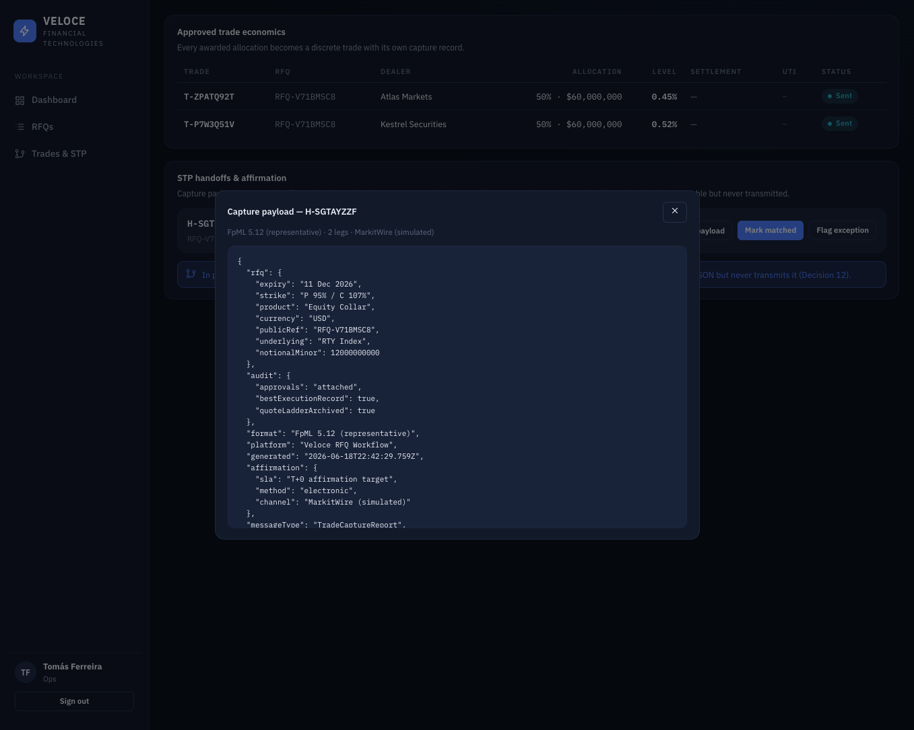
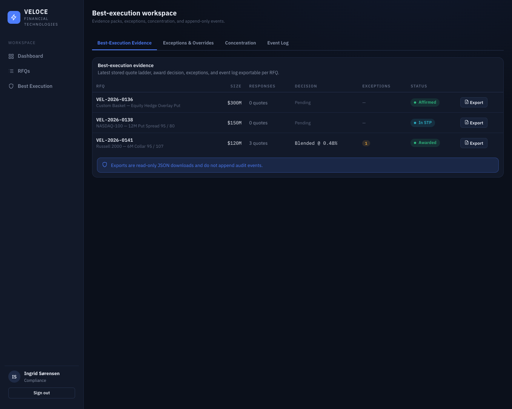

From request to affirmation.
One hedging request, followed all the way through the platform. Every state change is written to an append-only audit log, and every screen below is a real view from the demo.
Build the request
A trader specifies the structure — underlying, strike, expiry, size, settlement — and selects the dealer panel to invite. A request can be launched blind, so dealers quote without seeing one another.
Dealers quote, the board ranks
Invited dealers respond during a timed window. As quotes arrive the board ranks them by level and shows partial-size limits — liquidity an email thread can't aggregate. The countdown and deadline are enforced server-side.

Construct the award
Veloce computes the best single-bank fill and the best blended allocation that stacks partials until the full size is covered, and quantifies the difference in basis points and dollars. Here the blended construction saves 13.4 bps ($335,000) versus the best single bank.
Approve against policy
Recommending an award routes it to an approver. Policy checks fire in-flow: notional thresholds, a >35% dealer-concentration flag, and a best-execution deviation note if the award isn't the best quoted price. Above $250M the platform shows a two-person-committee requirement and records an acknowledgement note.
Capture trades & generate STP
On approval each allocation becomes a discrete trade. Operations generate a capture payload — representative FpML-style JSON — that is persisted and previewable but, in the pilot, deliberately never transmitted.

Affirm, then prove best execution
Operations advance the handoff through the affirmation lifecycle. Compliance gets a per-RFQ best-execution evidence pack — the quote ladder, the decision, exceptions, and the event log — plus a dealer-concentration view, all exportable.
